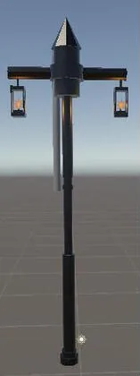

01Duo Chrome
Duo Chrome was built by a team of five over three weeks, and it shows my comfort in Unity and working in version control as part of a team.
My part: I developed and implemented the dash mechanic, the checkpoint and level-transition systems, and the first level after the tutorial.
02Snowventure
Snowventure was built by the same team plus one more programmer over four weeks, and it was my first time working on a fully 3D puzzle-platformer.
My part: I made and integrated the music and sound effects, mostly in FMOD. I also modeled and programmed the checkpoint flag and modeled other objects in the game, like the lamp post shown here.

03Minimal Shade
Minimal Shade is an original concept I've only had the chance to rough-prototype, but it's one I'm really passionate about. I pitched it in a month-long game pitch contest and made the final round, 6 out of 40 pitches. It wasn't one of the three winners, but it shows how I think about original ideas that push against the norms of the genre.